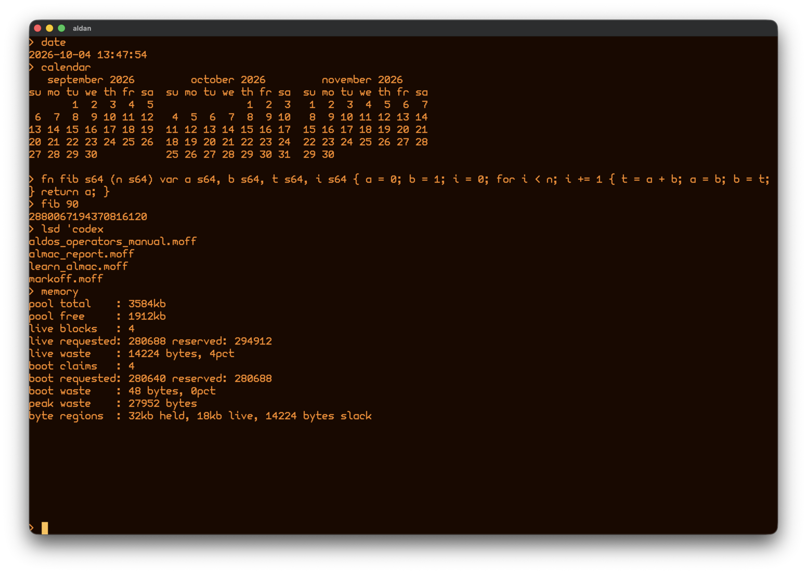
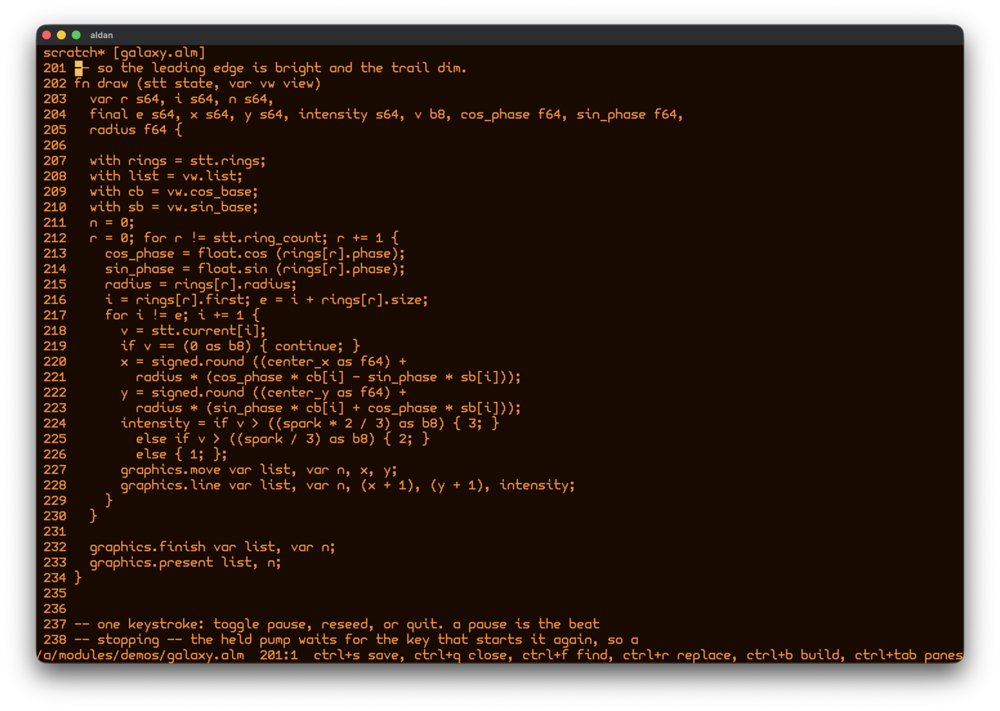
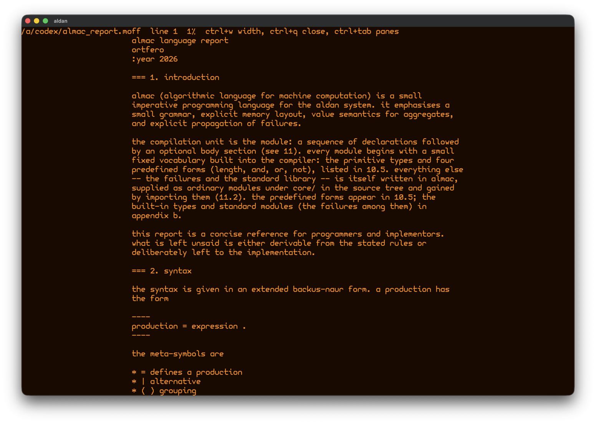
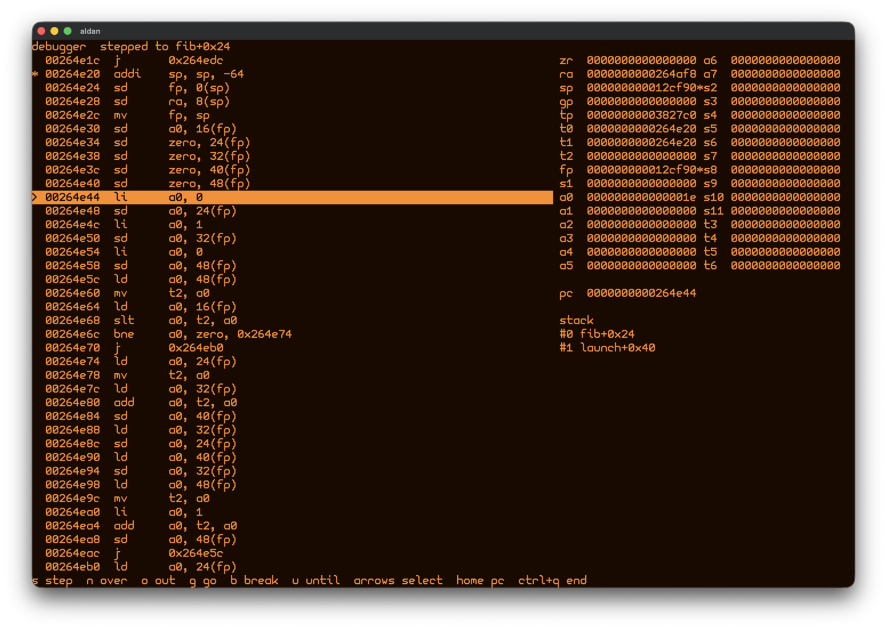
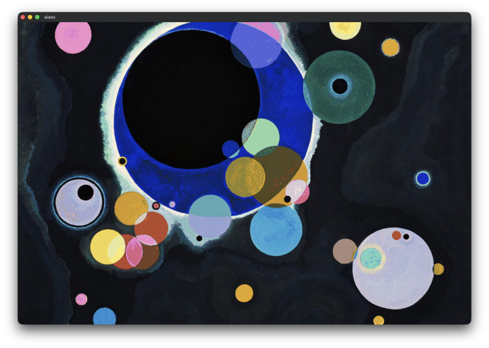
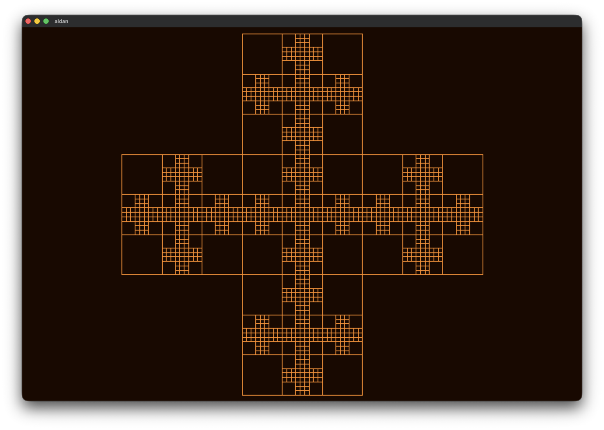
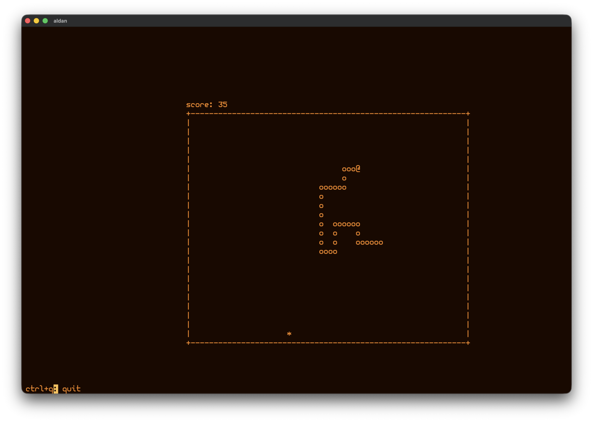
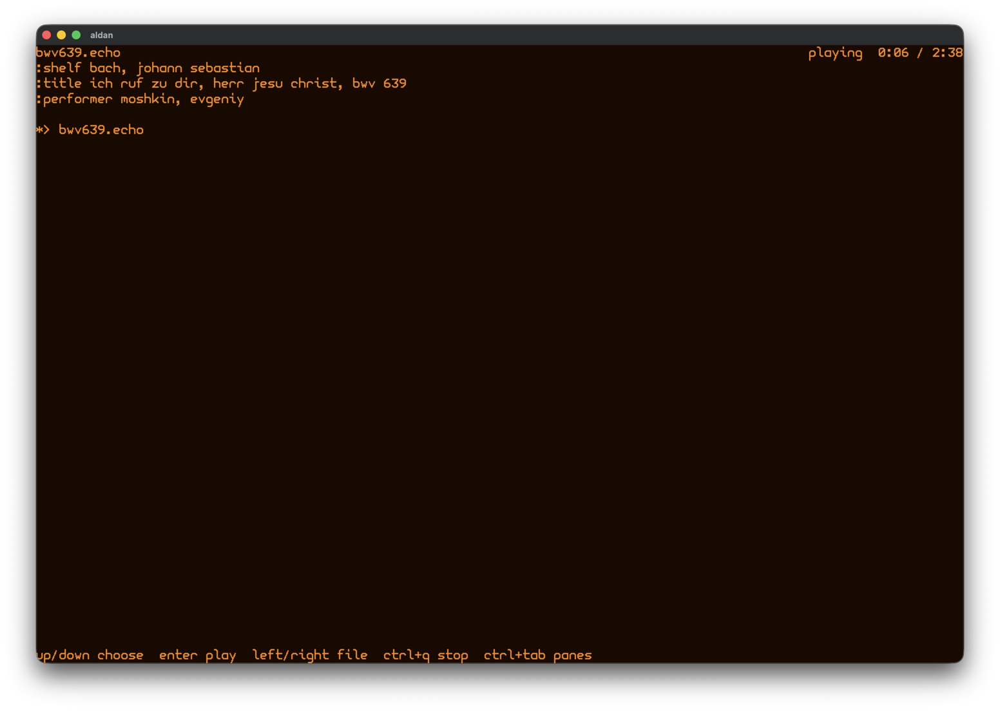

a fantasy computer.
aldan also runs on a stock qemu risc-v virt machine.
download the image
and unpack it: it holds bootmgr.bin (firmware) and disk.img.
then:
qemu-system-riscv64, version 8 or newer)qemu-system-riscv64 -M virt -m 16M -smp 1 \ -display sdl -serial stdio -monitor none \ -cpu rv64,v=true,vlen=256,zba=true,zbb=true,zbs=true,num-triggers=8 \ -bios bootmgr.bin \ -drive file=disk.img,if=none,id=d0,format=raw,snapshot=on \ -device nvme,drive=d0,serial=aldan \ -netdev user,id=n0 -device virtio-net-device,netdev=n0 \ -device virtio-keyboard-device \ -device virtio-gpu-device,xres=1560,yres=1040 \ -global virtio-mmio.force-legacy=false
-display cocoa,zoom-to-fit=on instead of -display sdlsnapshot=on keeps disk.img untouched, so changes are not savedfor convenience the archive also has run.sh, which runs the same command.







